In the Platform Settings section of the sidebar, select Groups. Choose a group to view its details in a dashboard view.
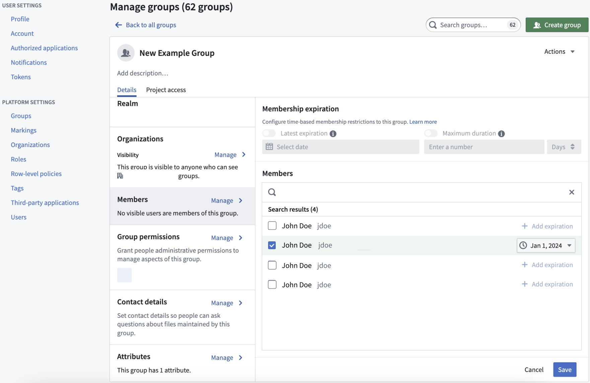
You can view a variety of information about the selected group:
:::callout{theme="neutral"}
You will only be able to view groups for which you have View group membership permission on the group's Organization. This permission can be granted from Settings > Platform Settings > Organizations by selecting the Organization of interest and then choosing Manage for Organization permissions. This will display a list of users and groups as well as a search box; for users and groups that have been added, use the dropdown box to enable the View group membership option.
:::
If you can Manage membership on a given group, you can mandate that new memberships to the group are temporary. Do this by configuring the following group properties:
Either or both of these properties can be simultaneously set. When both are set, the latest allowed expiration will be the most constraining property of the two.
Additionally, if you have Manage membership permissions, you can add temporary members to the group that are set with a membership expiration date property. You can add these temporary members to groups that do not have a set Latest expiration or Maximum duration property.
Any access requests resulting in membership requests for groups that have either Latest expiration or Maximum duration properties will be bounded by a maximum expiration.
When a temporary group membership expires, a revocation notification is sent to affected users. Additionally, users with temporary membership will receive a reminder notification seven days before their membership expires. However, if a user is added to a group with an expiration set for less than seven days, they will not receive a reminder notification.
If users do not wish to receive these notifications, they can configure platform notification settings in Account > Settings > Notifications from the platform sidebar.
If you can manage permissions for a group that has a defined role on a Project, then you can configure custom access request forms for that Project by adding an attribute to the group using the following structure:
access-request:'group-category-name''intended group value'These attributes appear automatically as part of the Request access pop-up window once you add them to the group's Attributes, where a user can select them as part of their access request form.
For example, adding the following group attributes results in the below custom request flow:
access-request: Teamblue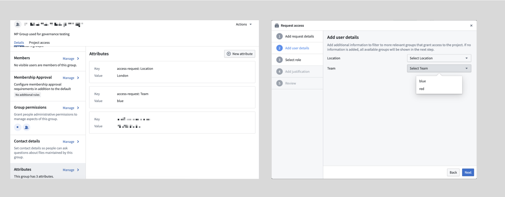
Custom access request forms are particularly useful for Projects with multiple groups, as they provide a streamlined and intuitive access request process to improve the administrator and user experience.
By default, all groups with a role in a Project appear in the access request form. If you want to hide certain groups, you can exclude them in the Project settings.
To configure which groups should be excluded from the access request flow for a Project, navigate to the Access panel > Settings > Project access request.
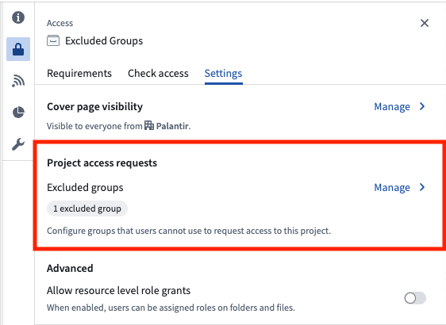
If you are an Owner on a Project, select the Manage button, then choose the groups to hide from the request flow. If you are not an Owner on the Project, you will see a View button that allows you to see which groups are excluded, but you will not be able to make any changes.
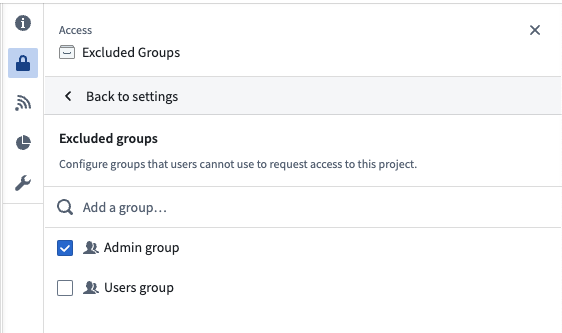
Excluding groups is a per-Project setting, offering flexibility. A group can be excluded from most Projects but included in specific ones. Users can request access to the group in those specific Projects. If approved, they will gain access to all Projects where the group has a role.
This feature helps prevent accidental membership requests to groups like admin groups while still allowing necessary access through designated Projects.
:::callout{theme="neutral" title="Beta"} Custom policies are in the beta phase of development and may not be available on your enrollment. Functionality may change during active development. Contact Palantir Support to request access to this feature. :::
Users with Manage membership or Manage Permissions permissions on the group can configure custom policies that will be applied to any access requests that result in membership requests for the select group. That can be configured through the Membership Approval section as shown below:
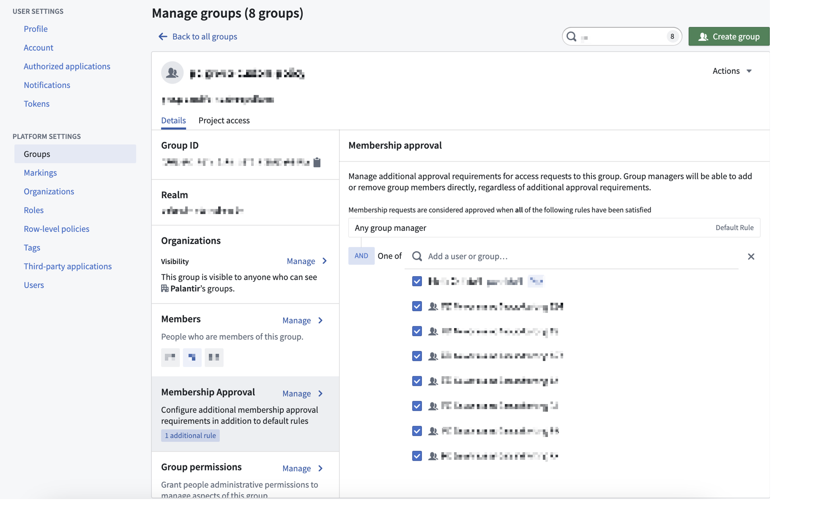
If a group has custom policies configured, then any access request that results in a request to that group will be affected. The custom policy will apply to the Group membership subtask to add members to the specific group. For an access request to be approved, all subtasks must be approved. Approval policies are communicated both when requesting access and when reviewing existing access requests.
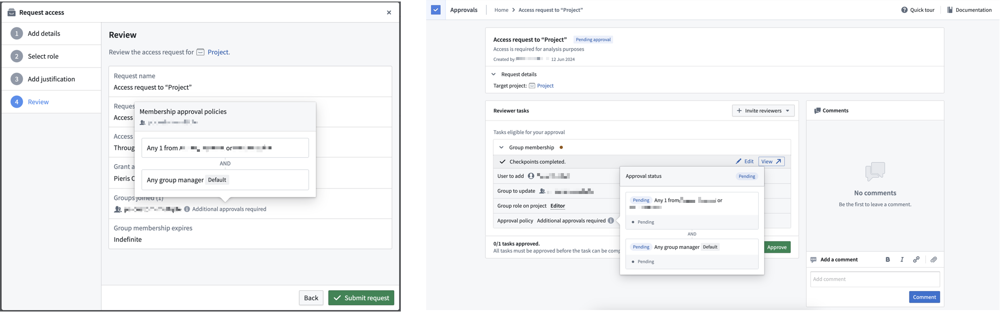
Select Project access next to the Details tab to view Project access details for the selected group.
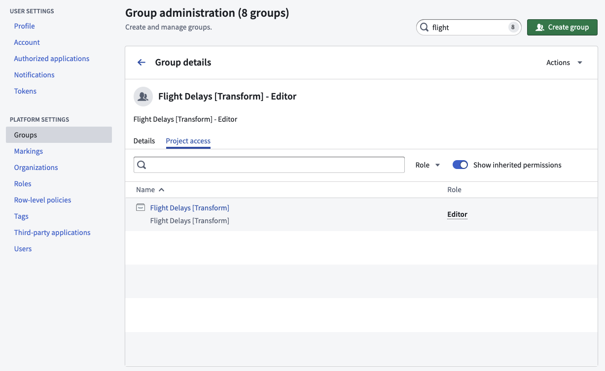
The Project access view allows a group administrator to see all the Projects that a group has access to and the specific Project roles granted to the group. This view is especially helpful when deciding to add or remove users from a group because you can see how access will change.
The Show inherited permissions toggle is on by default and will traverse all nested groups to find what Projects the group has access to. If you turn this toggle off, then the list will only show Projects where the group was directly applied.
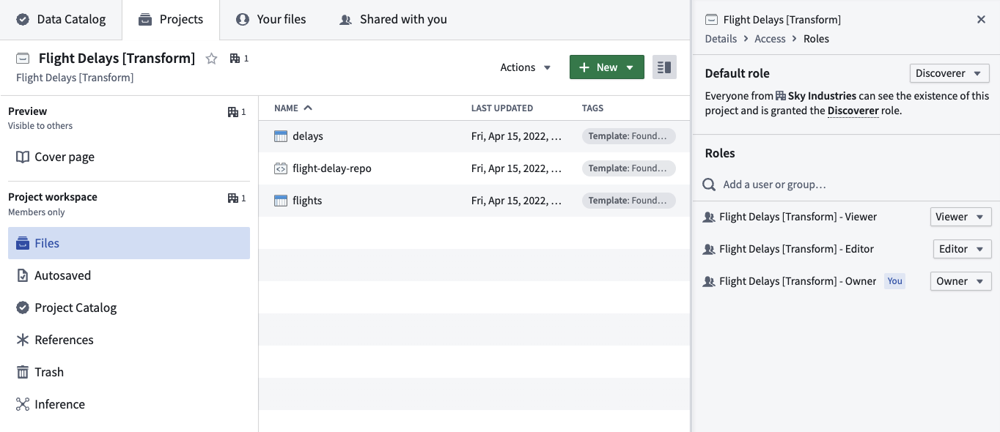
Users with Manage membership permissions can rename groups. When a user renames a group, some actions occur automatically:
You can specify contact details for a group to serve as the point of contact. Users in the manage permissions group can manage permissions. Users can define whether the group should be contacted through Foundry Issues or by a given email.
Setting contact details for a group can be useful if you want to set a group as a Project point of contact in the Project resource sidebar. The Project point of contact can be set by Project owners by selecting Add under the Project point of contact section in the Project overview.

Access the Group Permissions view from the Group details dashboard. Users with Manage permissions can use this section to grant access permissions to groups rather than individual users to make permissions more transparent and auditable.
Granting group permissions is particularly useful when assigning permissions for Projects, since administrators can see what Projects a group has access to via the Project access tab mentioned above. We recommend a Project setup with at least three groups, one for each default role: Viewer, Editor, and Owner. You should set the Project default role to Discoverer.
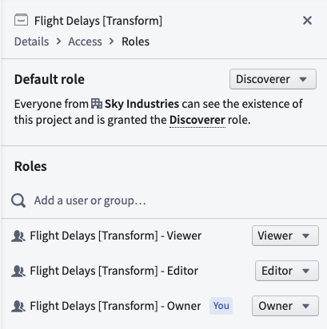
When creating a Restricted View that uses a Group name as one of the policy terms, you need to specify the realm of the group so it can match the group name accordingly. You can check the group realm in the Platform Settings > Groups interface and change the realm name at the bottom of the Restricted View rule editor.
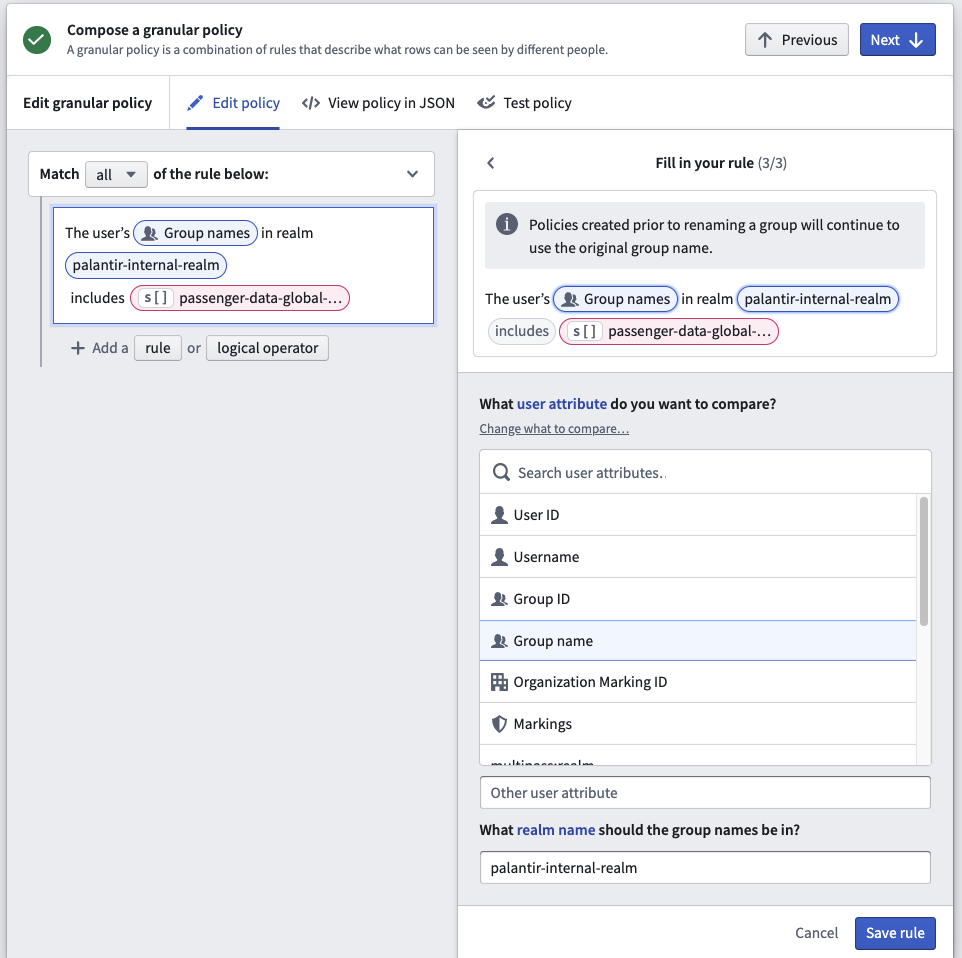
Administrators typically set up external realm providers (such as SSO, SAML realm, or ADFS) in Control Panel. If necessary, Foundryâs Platform Settings come with an internal implementation of an identity provider. This internal identity provider can be used in a number of scenarios where an external authentication system is not suitable.
External realms are groups directly derived from external systems, such as an identity provider like ADFS. The Platform Settings configuration defines the realms where the identity providers are assigned.
External realms cannot be modified in Foundry and exist in a read-only state. Operations that can only be performed in the external system include renaming, adding users to groups, modifying attributes, and creating new groups. External realm groups are ideal for most authorization and authentication-related functions in Foundry, including: * Assigning discretionary and mandatory controls, and * Enabling binary access to the platform (such as allowing or denying a set of users belonging to a particular group).
Since external realm groups are in a read-only state, users will not be able to request access to join external realm groups in Foundry. However, in Control Panel, you can configure the message a user receives when trying to request access to an external realm group. Navigate to Control Panel > Authentication > Your SSO > SAML > Manage > Attribute mapping > External group management to set a custom message and URL for the external realm. Only users in the same realm as the external realm will see the custom message and URL. Below is an example where an administrator added a message and link to their internal Jira instance.
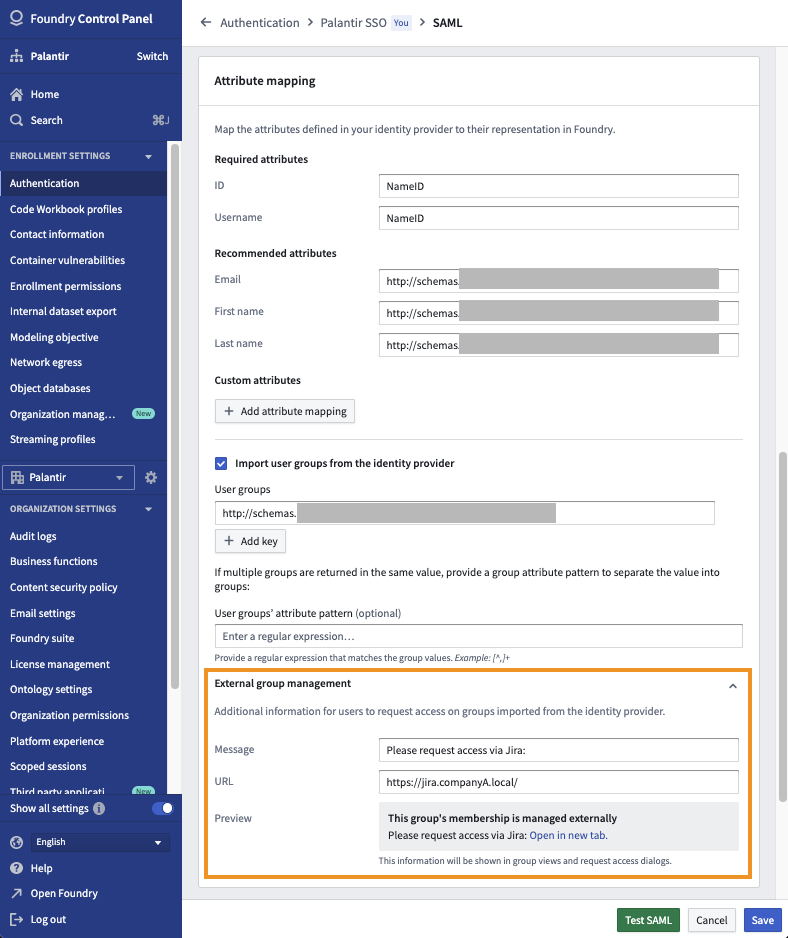
After a custom message is configured, you will see this message in Platform Settings when viewing all groups in that external realm.
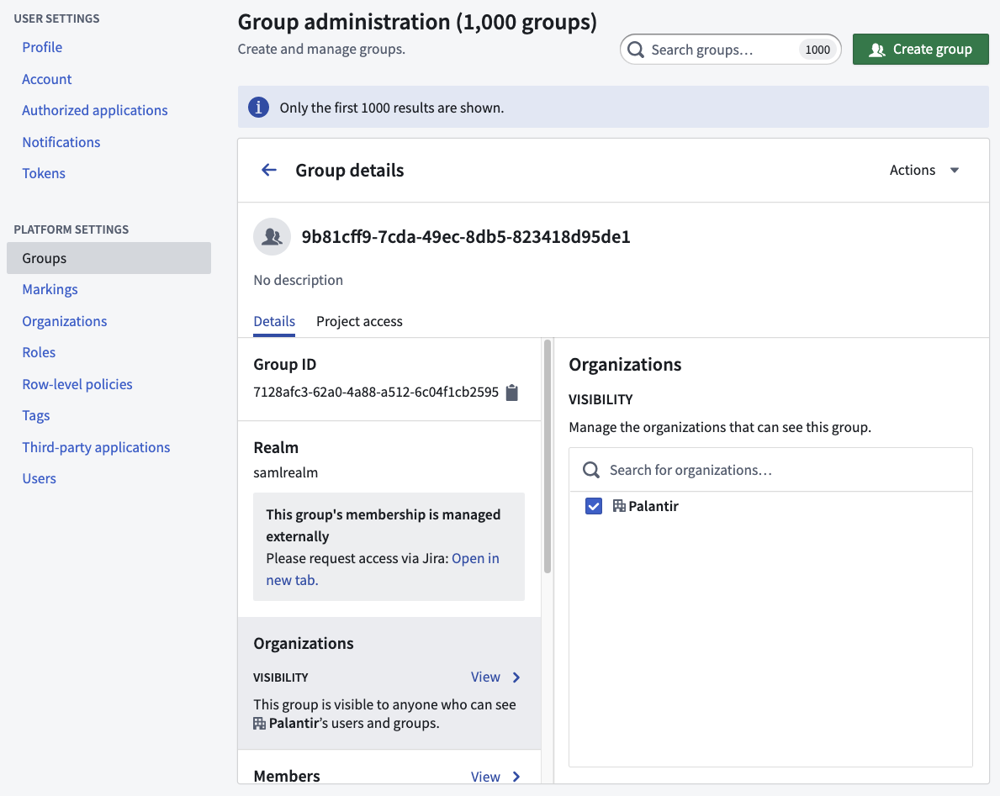
Users will see the message when they try to request access to a Project that grants a role to this group.
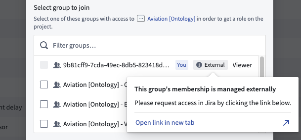
Lastly, you can use external realm groups for Organization assignment at login. Often, the information obtained via customer SSO becomes the input for triaging users into different Organizations at login.
:::callout{theme="warning"} All external realm groups must be assigned an Organization. If no Organization is assigned, the group will become visible to all users regardless of their Organization. :::
Groups created in Foundry are assigned to the internal realm.
Internal realm groups can be modified within Foundry. Operations that can be performed in the Groups interface include renaming, adding users to groups, modifying attributes, and creating new groups. The internal realm group is ideal for granting access to Foundry-level functionality, including bundling service user accounts into an internal realm group for allow-listing or deny-listing purposes (for example, to exclude service user accounts from user account expiry rules).
:::callout{theme="warning"} If external realm groups are being used, then it is important to avoid directly assigning users to internal realm groups. Instead, external realm group(s) to which users are added/removed should be nested within the internal realm group. :::